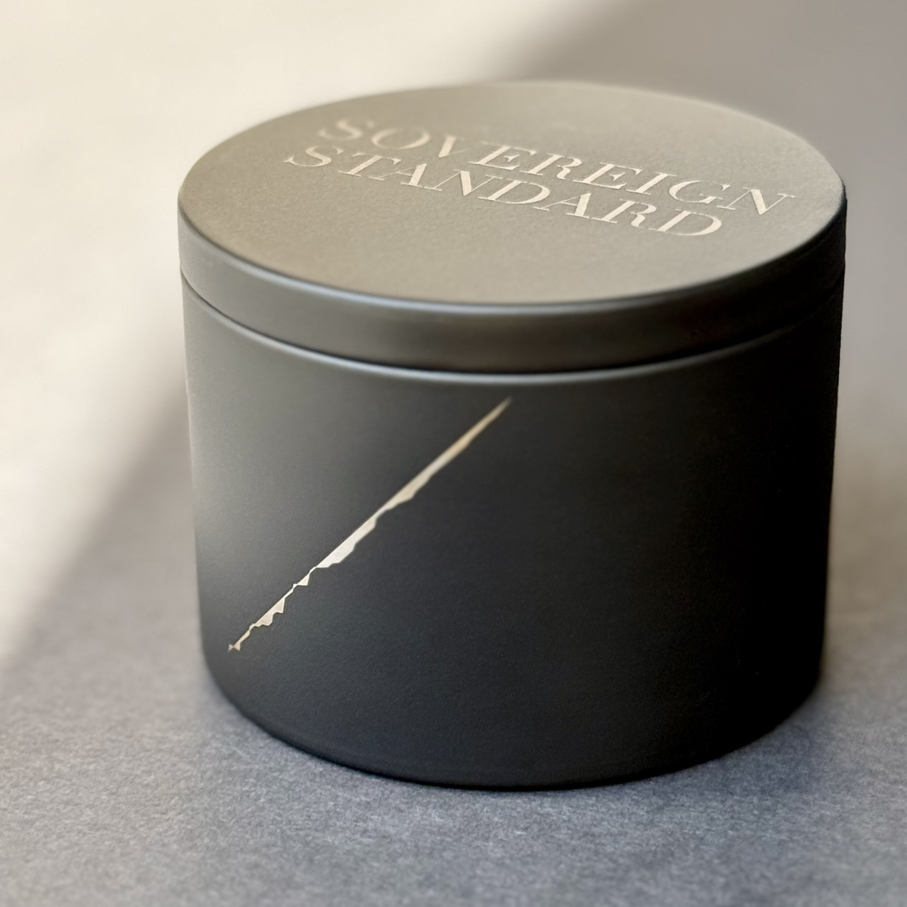
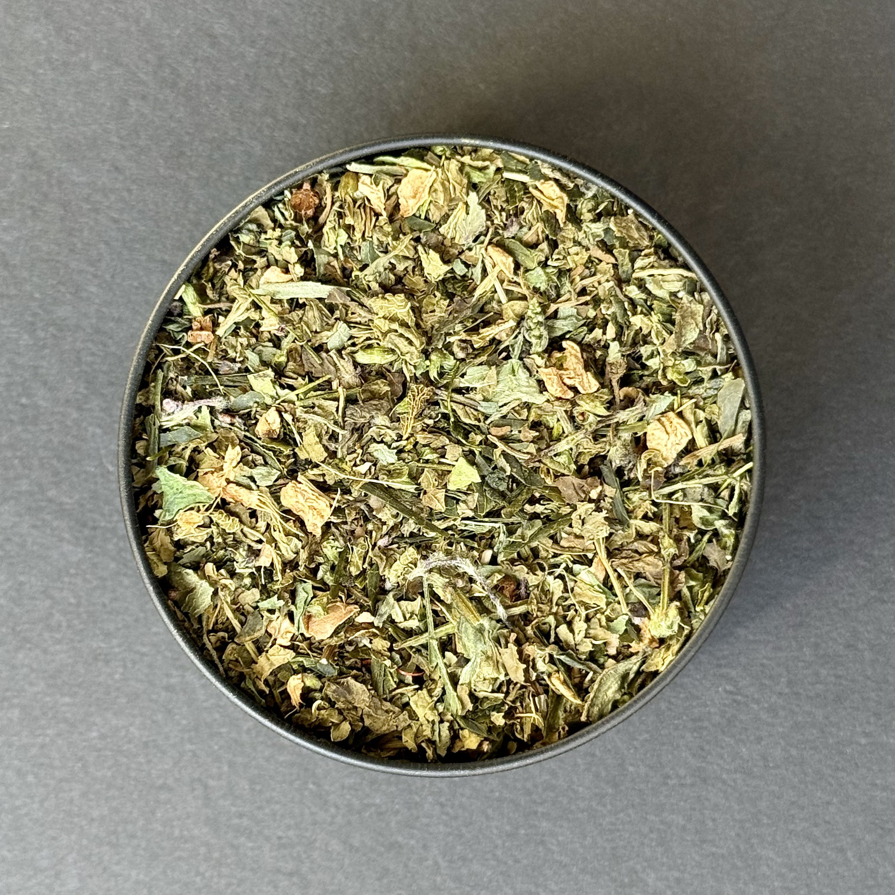

What A Vessel Is
A vessel is not only a container. It is a persistent identity with a deterministic origin, a registry state, and an attested life that deepens through claim, return, and recorded fill history.

Sovereign Standard is a serialized vessel-first system. Each vessel is engraved, issued into the archive, and claimable through the code carried by the object itself.
The first inhabitant is the Sovereign Standard green tea blend. The enduring object is the vessel. The vessel record and collector access unlocks after claim.
The vessel persists. The contents pass through. The record remains.


A vessel is not only a container. It is a persistent identity with a deterministic origin, a registry state, and an attested life that deepens through claim, return, and recorded fill history.
Claim does more than confirm possession. It activates collector access. Once claimed, a vessel can be revisited through its etched code to request the next fill, return through acquisition for the next vessel, and deepen its attested record over time.
The archive records issued vessels. Atlas reveals their structural relation. These are not decorative surfaces. They are the visible proof that Sovereign Standard preserves identity, state, and relation across the system.
The opening inhabitant of the vessel is the Sovereign Standard green tea blend. That first fill is not the whole object. The vessel remains after the initial contents are gone.
The public site frames the system, the archive records the vessels, the vessel carries the code, and the collector returns through the same object over time. Every layer points back to the same center.